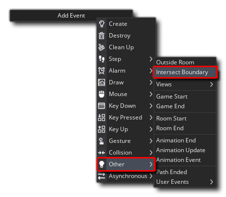
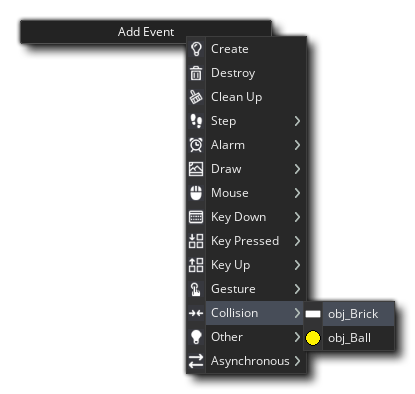

To complete our game, we need a ball object. So for that, do the following:
- Create a new object (use the right mouse button
 on the Objects resource and select "Create Object")
on the Objects resource and select "Create Object") - Name the object "obj_Ball"
- Assign the object the sprite "spr_Ball" (click the button with "No Sprite" and select "spr_Ball" from the asset manager)
- Add a Create Event (click the Add Event button and select Create)
In the Create event we want the following code:
/// @description Init Vars
go = false; // Controller variable to set when the ball is moving
spd = 3; // The base speed of the ball
dir = random_range(45, 135); // The initial direction of the ball
This object will also need a Step Event, so we'll add that now and give it the following code:
/// @description Ball Control
// First check if the ball is moving...
if !go
{
// Ball isn't moving so let's see if the game can be started by pressing "Space"
if keyboard_check_pressed(vk_space)
{
// Set the ball speed and direction and the "go" variable so this code won't run again
go = true;
speed = spd;
direction = dir;
audio_play_sound(snd_Click, 0, false);
}
}
All we're doing here is polling the "Space" key while the "go" variable is set to false, but if a press of the key is detected, we play a sound and then set the ball in motion, setting "go" to true so we don't poll the keyboard anymore.
That'll set our ball in motion, but what about when it reaches the edges of the game area? If we don't stop it, then it'll fly out the game room, which isn't really much fun! To prevent this we'll detect when the ball is in "collision" with the room boundary and react accordingly. Luckily for us, in the Other event category we have the Intersect Boundary event: 
Here we add the following code:
/// @description Bounce Or Die
// Check if the ball is "colliding" with the left or right side of the room
if bbox_left < 0 || bbox_right > room_width
{
// Make sure the ball stays within the room bounds
x = clamp(x, sprite_get_xoffset(sprite_index), room_width - sprite_get_xoffset(sprite_index));
// Reverse the horizontal component of the speed vector
hspeed *= -1;
}
// Check if the ball is "colliding" with the top of the room
if bbox_top < 0
{
// Reverse the vertical component of the speed vector
vspeed *= -1;
}
else
{
// Check if the ball is leaving the bottom of the room
if bbox_bottom > room_height
{
// The ball is leaving the room, so create a new one and destroy this one
instance_create_layer(xstart, ystart, layer, obj_Ball);
instance_destroy();
}
}
// With each bounce, increase the ball speed up to a maximum of 12px per step
if speed < 12 speed += 0.1;
audio_play_sound(snd_Bounce, 0, false);
direction += 2 - random(4);
This code will check to see which side of the room the ball is about to exit and then reverse the horizontal or vertical speed accordingly (making it look like it's bouncing) while playing a sound, except if it goes out the bottom. In that case, the ball instance will be destroyed and a new one created. Note that at the end of the code we increase the ball speed by a tiny amount, play the "bounce" sound we added earlier, and we also add a small random amount between 2 and -2 to the direction of the ball. This is to prevent the ball possibly getting "stuck" bouncing at perfect 180° angles between the wall and anything else.
The next piece of code required for the ball will go in a Collision Event. A collision event is triggered when the object with the event comes into collision with the instance of another object which you specify. In this case, we are going to add a collision for the ball with the brick object, so click the Add Event button now and add a Collision event with the object "obj_Brick": 
And in the script editor we will add this code:
/// @description Destroy Brick
var _dir = direction - 180; // Get the direction back along the way the ball moved
while (place_meeting(x, y, other)) // This loop will only run while a collision is detected
{
// Move the ball back along the direction it came from until no collision is detected
x += lengthdir_x(1, _dir);
y += lengthdir_y(1, _dir);
}
move_bounce_all(true); // Set the bounce angle
if speed < 12 speed += 0.1; // Make the ball faster
audio_play_sound(snd_Break, 0, false);
instance_destroy(other); // Destroy the "other" object in the collision, ie: the brick
When a collision event is triggered it is because the sprite bounding-box of one object is overlapping the sprite bounding-box of another, which in this case means that the ball is overlapping the brick. We want to simulate a bounce off the edge of the brick, but if they are overlapping (even if it's only by a couple of pixels) then this bounce will be wrong, so what this code does is it first moves the ball back along the direction it came from until the bounding-boxes of each instance in the collision are no longer overlapping (they could be considered "touching") and then uses the a GML function to calculate the bounce direction, before destroying the brick itself and playing a sound.
Our final peice of code will go in another Collision event, this time with the bat. So, add a Collision event with "obj_Bat" and give it the following code:
/// @description Bounce
vspeed *= -1; // Reverse the vertical speed
var _s = speed; // Store the current speed
var _dir = point_direction(other.x, other.y + 32, x, y);
var _dist = point_distance(x, y, other.x, other.y + 32)
// Add to direction based on position of bounce
motion_add(_dir, _dist / 5);
// Maintain the speed
speed = _s;
audio_play_sound(snd_Bounce, 0, false);
With this code we are setting the direction of the ball based on how far from the center of the bat the ball hit, so in this way we are giving the player a bit of control over the direction of the ball.
It's time now to place all this into a room and test our game!